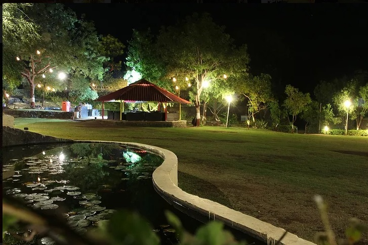

About the Garden
Located at RMK Engineering College, the Cholan Garden is a peaceful green space for students and visitors to relax and recharge.
It features native plants, clean pathways, and quiet seating areas — a symbol of harmony between nature and education.
The garden also hosts cultural events and outdoor activities, promoting both sustainability and student well-being.